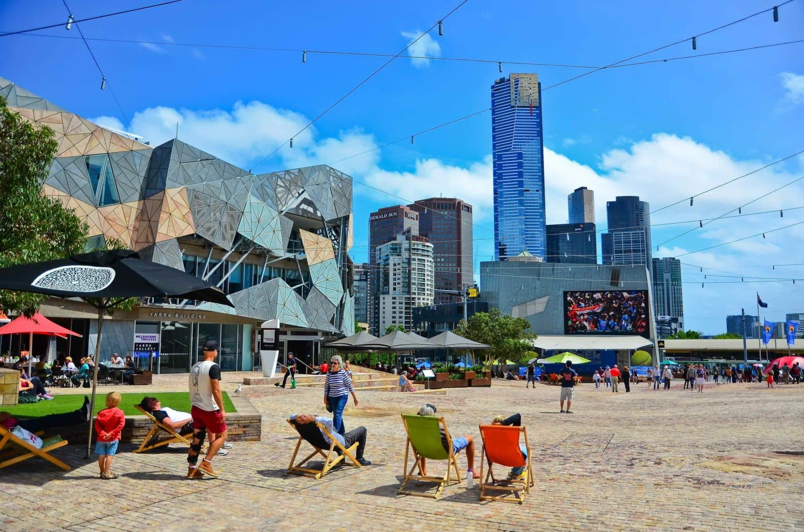

Sydney
A cidade mais conhecida da Austrália é, certamente, um destino imperdível para quem visita o país. Dona de um dos mais famosos cartões-postais australianos — o Sydney Opera House, com sua arquitetura inusitada e inspiradora —, Sydney é cheia de surpresas e atrações.
Melbourne
Localizada em Victoria, Melbourne é a segunda maior cidade da Austrália e é o destino perfeito para quem deseja explorar o lado mais urbano do país. Sua vida cultural é bastante intensa e agitada, com uma grande programação de shows e teatros, além de bares, cafés e restaurantes espalhados pela cidade.
Gold Coast
A cidade de Gold Coast, na costa Leste do país, é conhecida mundialmente como o paraíso dos surfistas — inclusive, uma de suas praias mais famosas é a Surfers Paradise. Mas há muito mais do que apenas praias para curtir em Gold Coast: a cidade é bastante badalada e recheada de atrações.
Parque Nacional Kakadu
O Parque Nacional Kakadu, eleito como Patrimônio da Humanidade pela Unesco, é o passeio ideal para os amantes de história e natureza. A região conta com galerias preservadas de pinturas rupestres feitas a mais de 50 mil anos. Além disso, o parque ainda é habitado por aborígenes australianos, descendentes dos povos nativos que ocupavam o país antes da colonização e que ainda preservam sua cultura e a natureza da região.
Parque Nacional Uluru-Kata Tjuta
Localizado bem no centro do Deserto Vermelho australiano, na região de Outback, o Parque Nacional Uluru-Kata Tjuta também é um dos Patrimônios da Humanidade pela Unesco. O local carrega uma forte história dos povos ancestrais da Austrália e atrai turistas do mundo inteiro que desejam conhecer mais sobre as origens culturais do país.
Tasmânia
Com paisagens e belezas naturais de tirar o fôlego, a Tasmânia é outra parada obrigatória para os turistas que passam pelo território australiano. A ilha — famosa pelo demônio-da-tasmânia, que inspirou um famoso personagem dos cartoons — é cheia de belas praias e atrações turísticas, como passeios pelas águas cristalinas e práticas de esportes aquáticos.
Snowy Mountains
Nem só de praias ensolaradas se faz esse paraíso chamado Austrália! A região de Snowy Mountains é perfeita para quem busca passeios e esportes na neve, como o esqui e o snowboard. Os praticantes de escalada também podem aproveitar para conhecer o Parque Nacional de Kosciuszko, que abriga o monte Kosciuszko, o maior de todo o território australiano.
